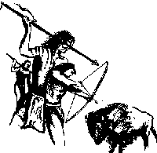
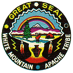
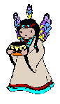

|
|
|
The word Apache may have come from the Zuni word Apachu meaning “enemy.”
It also could have come from Awa’tehe, the Ute name for Apache. They arrived
between 1000 A.D. and 1400 A.D. in the southwest. After being separated from
their northern kinsmen, they ended up carving out a home in the south along
the east side of the Rocky Mountains. Their tribe then ended up spreading
west into New Mexico and Arizona. The Apaches were nomadic Indians and lived
off Buffalo. They killed the animals for their hides, which they used for
clothes and tents, and meat to eat. This tribe was one of the first, besides
the Pueblos, to learn to ride horses. |
|  |
| There
are six subdivisions of the Apache tribe. The subdivision that lives in the
mountainous country that lies left of the east line of Arizona, but south
of the Gila River is the Be-don-ko-he. Geronimo was their chief. Victoria
was the chief of the Chi-hen-ne that lived east of the Be-don-ko-he. The
White Mountain Apache lived northwest of the Chi-hen-ne .Their chief was
Hash-ka-ai-la. The Chi-e-a-hen had two chiefs. There names where Co-si-to
and Co-da-hoo-yah. This subdivision lived west of the Be-don-ko-he.
Southeast of the Chi-e-a-hen lived the Cho-kon-en (Chiricahua). Cochise was
their chief in charge. Whoa was the chief of Nedni. They were located south
and west of the Be-don-ko-he. |
|  |
| Related families lived in one
place. The oldest man was the headman and was known by his name. Local groups
were made up of a number of families. The most dynamic headman of all the
families was the chief. The only authority he had was over the local group.
All the local groups stayed in good contact incase of an emergency or to
carry out a task that needed more that one group. When local groups joined
they became a band. Different men led different expeditions, but there was
never just one leader for a band nor was there ever only one chief over all
the Apaches. |
| The Apache religion is very interesting to me. It states that there were many spirits. It’s believed that everything in nature had a spirit. Many important ceremonies were a part of the Apaches daily life. The ceremonies were performed by Di-yin who is a religious leader. Sometimes during these traditional gatherings they danced and wore beautiful clothing. While dancing they asked for blessings. |
|
| During childhood there was not
time for goofing off. At an early age the children were taught to cooperate
and to contribute to the family and band. They were loved and cherished by
everybody in the band. If you were going to survivor the Apache way of life
you had to be tough and strong. The boys were raised to become good hunters
and by the age of eight or nine years old they had already started using
bows and arrows. |
| When
a man is done with training they were able to go on their first raid. If
after four raids he proved himself he was considered a man, and became part
of the war parities. The band would scorn a male that had failed. Between
twenty and twenty-five years of age was when he could get married, but had
to take part in at least four raids. The woman could get married when she
could take over all the household duties; she was usually fifteen to eighteen
years of age. |
|  |
|
Marriage was very important to the Apaches. The man’s parents arranged
the wedding. Usually the male asked an old female relative to approach the
woman’s family. If the offer was accepted the man presented gifts to the
other family such as hoses, blankets, and guns. In return, the family that
received the gifts would give the other family smaller gift backs. When getting
married the two families would not have a ceremony. A dwelling would be placed
by the female’s parents home. The man would then live at the wives camp with
the door facing away from her parents. Out of respect the male wasn’t supposed
to talk to his mother-in-law. They believed that to eliminate conflict and
insure harmony between the two households. After marriage a man was expected
to support his own parents plus his wives parents. |
| The
Apache Indians seldom spoke of the dead. If they had to acknowledge them
they would say “He is gone.” They feared that if they looked or touched the
possessions of the dead they might get a disease. So when they buried the
body they buried the possessions too. The body could be placed in caves or
on cliffs between rocks. The location of the grave was never mentioned. And
if a child was called by his or name they would usually get it changed. Bands
moved to a different location, because it was forbidden to speak of the dead. |
|
They had very peaceful trade with the Pueblos until the Spanish forced
the Pueblos to work their farms. The Pueblos then became unwilling to trade
with the nomadic Indians so they raided for horses and supplies. The first
contact the Apaches had with the Spanish was in 1541 when Francisco Vazquez
de Coronado and his men encountered a band of Apaches at Querechos on their
journey to Quivira. Continuous raids made the Spanish settlers and the Pueblo
Indians suffer a lot. |
|
The Pueblo Revolt was very important to the Apache. In 1680 the Spaniards
were driven out of New Mexico because the Pueblos had to revolt. Raids, in
conjunction with drought, harsh Spanish rule, and missionary activities led
to the revolt. In 1692 the Spaniards required New Mexico. Wherever desired,
the Apache, a powerful nation of Indians, raided with impunity. The Comanche’s
pressured the Apaches from the north because of the aggressive behavior that
turned neighbors into enemies. In the 1700 they started to migrate south
and west as the Comanche, Wichita, and the Tejas began occupying dominant
position on the south plains. Plains culture was very hard for the tribe
to adapt to. Tending fields of food, they attempted to improve food sources.
They spent a lot of time in the fields, that the Comanche’s knew where to
launch raids. The Comanche’s became stronger, but at the same time the Apaches
grew weaker. |
| Today the Apaches are trying to
improve things. After passage from the IRA, some of the groups have formed
governments. They have worked on creating jobs for people. They have funded
many types of businesses. Getting better schools for children is a concern.
But they continue to draw strength and pride. |
Go to Bibliography page |
Christine Forman Rossville Junior High 2002 Plains Projects |